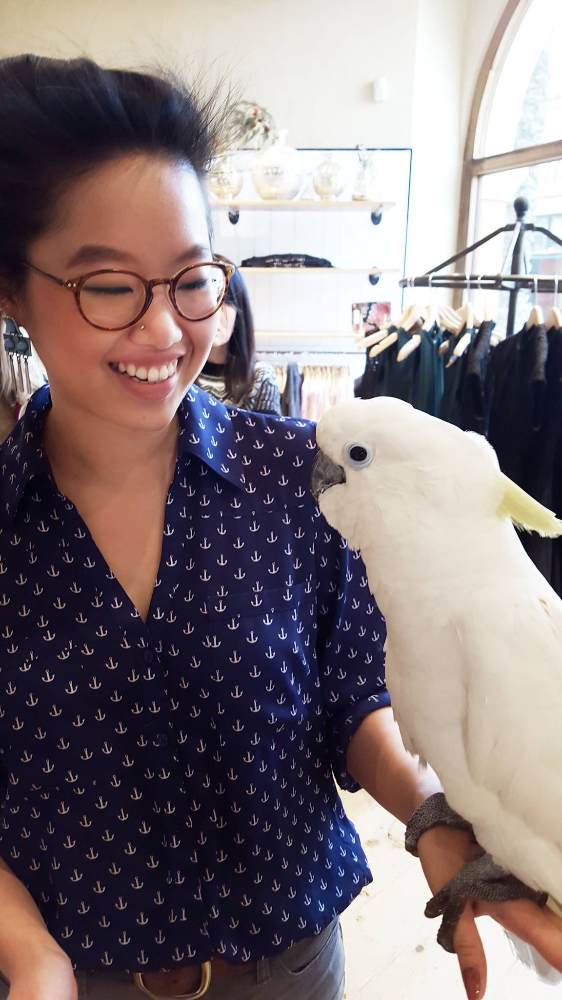

Cindy currently works at Capital One as a software engineer. She graduated from Georgia Tech with a BS in Computational Media, and has worked at Macy's Corporate, IBM, Georgia Tech, and Capital One. Her passion is in ux design and development, taking particular interest in empathic design, or a focus on an user's emotion towards a product and building a social connection. Cindy strongly believes in the ability of empathic design to empower users, and in her free time constantly works on developing a mental health tool geared towards an Asian American cultural frameworks.
Cindy is possibly a hackathon addict, mentoring and coaching several hackathons per season in ux design and web development. In her free time, Cindy is active in yoga and design communities in Richmond.